CLICK
para activar el sonido
▲
▼
Desliza para comenzar

⮌
Menú Principal
Dispersión de Semillas en Tabasco
Toca a un animal para explorar su dinámica ecológica
🦜
Periquito Azteca
Fruto: Jobo (Spondias mombin)
🐭
Ratón de Campo
Fruto: Guayaba (Psidium guajava)
▼
🐒
Mono Araña
Fruto: Cacao (Theobroma cacao)
▲
▼